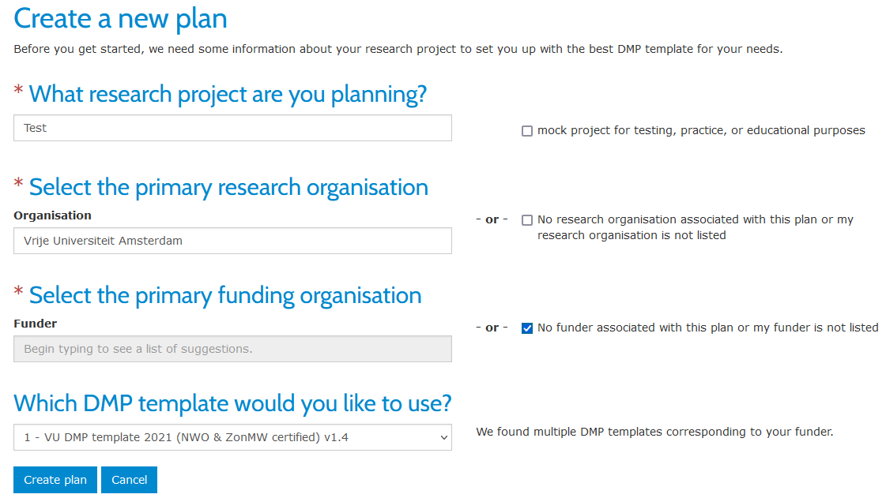
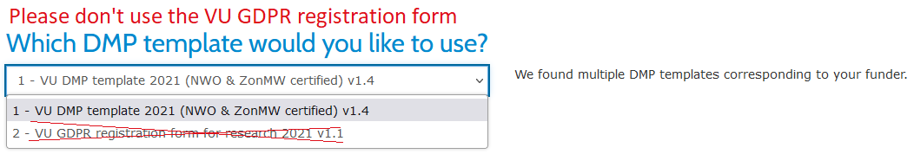
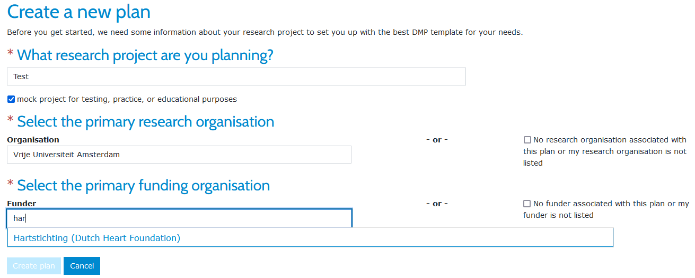

How can you set up research data management from the start?
Research Proposal
Grant programmes from organisations like NWO, ZonMw and ERC require you to think about the method of data collection, the journey of the data in your research project and how to protect or share data during and after the research project. It is important to bear in mind the specific laws and regulations that apply to the kind of data that is collected. If a project involves data on individuals and organisations this impacts the design of the necessary IT infrastructure. A more detailed description of this will later be captured in the data management plan.
When writing your research proposal the following items are important:
- Fill in the Data Management Section if your funder requires this
- Planning: One of the early deliverables will be a detailed Data Management Plan. Instructions for writing a DMP are available in the DMP section below. You can find more information about aspects to be addressed in a DMP in RDM requirements, Collaboration, Data Security, GDPR & Privacy and Policies & Regulations.
- Budget: Take into account the costs (labour and material) for data storage during and data archiving after your project.
- Writing: Funders that distribute grants like to maximise the effectiveness of this investment. It is therefore highly recommended that the data will be made Findable, Accessible, Interoperable and Re-usable (FAIR Principles). For that reason, it is useful to make explicit in your proposal how you will aim to make your data FAIR. This does not mean that the data have to be open: Laws, licenses and contracts regarding personal and sensitive data may limit the possibility to share the data publicly.
The RDM Support Desk provides advice and help when writing a Data Management Section as part of the research proposal. Also make sure to reach out to VU Amsterdam Grants Office (IXA-GO) for advice and practical aid for your grant in general as early as possible.
Data Management Section
Many funders require researchers to include a section in their project proposal about Research Data Management, in which they explain whether existing data will be reused, whether new data will be collected or generated during the project, and how they plan to structure, archive and share their data. Depending on requirements of the funder, the paragraph can be short or more extensive.
Funders may have different requirements for the data management section in the project proposal. Always check what your funder asks for. Below is a list of information on data management sections from main Dutch funding bodies.
We recommend you to ask advice from the RDM Support Desk when writing your data management section.
RDM Costs
Many research funders encourage applicants to include data management and sharing costs in research proposals. Some funders will provide advice on costs related to data management. Some remarks on costs are provided here:
- The Data Management Plan should describe the activities that incur costs and provide justification for the allocation of resources (example: acquisition of a programmer who will write software needed to capture the data).
- No expenditure can be ‘double funded’, i.e. a service that is centrally supported by indirect costs must not be included as a direct cost as well (example: computers that are already provided to employees and paid for by the university may not be included).
- The budget and justification should broadly indicate where RDM costs will be incurred, where possible. E.g. data capture and cleaning, data curation and preservation, data sharing.
- Include budget for long-term storage if data are expected to be deposited in a repository not funded by the university or external funders (VU repositories are: DataverseNL, Yoda). 🔒 VU has an internal breakdown of costs for storage and archiving for VU-managed storage and repositories.
A practical costing tool is available from the UK Data Archive. Based on this costing tool, Utrecht University has developed a guide to calculate the costs of data management. You can use those guides as well to estimate the costs needed specifically for RDM.
Most material costs of the storage solutions offered by VU Amsterdam are covered centrally (up to 500 GB), but if you need to specify the costs for your project, look at the 🔒 Research & Archiving Storage Cost Model
Examples to put in a data management plan:
| Data Stage | Dataset | Type of data | Costs |
|---|---|---|---|
| Raw data | Interviews | Audio files | Audio equipment rental |
| Location rental costs | |||
| Data storage & backup | |||
| Processed data | Transcription of interviews | Word files | Personnel costs: hiring research assistants for manual entry |
| Data storage & backup | |||
| Analysis software | R script | Personnel costs: programmer to write a programme to mine the data | |
| Analysed data | Regression graphic | Photoshop files | Software costs |
| Project Website | HTML, Java | Hosting fee | |
| Personnel to build initial website |
Data Management Plan
If you receive funding from a funder, one of the early deliverables will be a Data Management Plan. In general, every research benefits from writing a data management plan. It will help you to address data management aspects in a systematic way, so that you can set up useful RDM practices for your research and identify potential things for which you need to arrange something, like sufficient storage space, a particular data collection methodology, etc.
What is a DMP
A Data Management Plan (DMP) is a document outlining how research data will be handled throughout the research life cycle. A DMP is a structured way to address data collection, organization, storage, sharing, and preservation. It also outlines the measures taken to ensure data security and addresses how data will be preserved and made available for future use.
DMPonline
VU Amsterdam offers the online tool DMPonline for writing Data Management Plans. DMPonline is a platform that offers a range of templates, ensuring that researchers can create DMPs to meet the standards of diverse funders and institutions associated with their projects. DMPonline makes it easy to work on a DMP together with colleagues, advisors, or other stakeholders. VU Amsterdam researchers can use the request feedback function of DMPonline to get their DMP reviewed by a faculty data steward or RDM Support Desk colleague.
Instructions for selecting the right DMP template in DMPonline are available in the guide How can you set up research data management from the start?.
If you have questions about DMPonline, or encounter problems when using the tool, please get in touch with rdm@vu.nl.
What is data
Research data is any information that has been collected, observed, generated or created to validate original research findings. Examples of data could be interview recordings, experiment results, physical measurement, notes from focus group’s meetings, notes from fieldwork, observations captured in photographs, film or audio, text files extracted from a corpus, image of archival items or artworks, scraped websites, responses to survey questions. Algorithms, simulations, code, scripts and software are often also considered as research data. There is also physical data: (biological) samples, collections, artifacts etc.
Administrative documents, like informed consent forms and key files should be acknowledged as important elements of research data as well.
Data Assets
At VU Amsterdam, we sometimes use the term ‘Data Assets’. You can think of data assets as small ‘parcels’ of data that can change form or format throughout the research. For example, if you’re sending out surveys for your research, the survey responses are considered a data asset. If, in addition to the surveys, you’re also holding focus groups, the data collected from the focus group are also considered a data asset, separate from the survey results. Most projects will have more than one data asset per data stage. It is common to provide data assets based on the data stage such as raw, processed, or analysed. Raw Data refers to original data collected, Processed Data is data that has undergone some level of transformation or organisation. Processing involves cleaning, formatting, and structuring raw data to make them more understandable and suitable for analysis. Analysed Data usually results from statistical methods, detailed examination or interpretation.
Here are some examples of data assets in research data management:
| Data Stage | Dataset description | Type of data | Format |
|---|---|---|---|
| Raw data | Interviews | Audio files | MP3 |
| Spectographic analysis | Text files | CSV | |
| Processed data | Transcription of interviews | Text files | Docx |
| Data spreadsheet | SPSS files | SAV | |
| Analysed data | Regression graphic | Graph | PNG |
| Data table | Word file | Docx | |
| Other | Poster presentation | Powerpoint | PPS |
| Project Website | HTML | ||
| Analysis code | Text files | Python |
Note that these data assets also change in the different phases of the research! While the interview data are audio files in the raw stage, they are transcribed and become text files in the processed stage.
DMP Elements
VU Amsterdam DMP template consists of seven sections with questions. In DMPonline, there is guidance available for all sections, as well as example answers. When you are writing your DMP, you can consult this information directly in DMPonline. Below we provide references to information and support available for various RDM-related aspects.
Legal and ethical requirements
Working with personal data
If you have questions about working with personal data in research, please get in touch with the Privacy Champion of your faculty. The 🔒 overview of Privacy Champions can be found on VU Amsterdam website. Make sure to contact your Privacy Champion in the following situations:
- If you need to carry out a DPIA, or if you’re unsure if you need to do one
- If you work with special category personal data, or otherwise very sensitive data
- If you are collaborating with other parties
- If you need software for which no licence is set up on behalf of VU Amsterdam
- If you wish to reuse existing data containing personal data
It is impossible to provide an overview of tasks to be carried out to ensure compliance with the GDPR that fits all research projects. For that reason, it is important to contact your Privacy Champion. They will be able to identify what needs to be arranged to adhere to the GDPR.
Ethical Review
In cases where research involves human or animal participants, a research proposal may need to be reviewed by an ethics committee. VU Amsterdam and Amsterdam UMC (location VUmc), have several ethics committees, which are listed below. Please note that researchers at VU Amsterdam also have to go to the METc at VUmc if their research is subject to the WMO, which is not restricted to research at VUmc.
Ethics committees
- ACTA: ACTA Ethics Review Board (ETC), Academisch Centrum Tandheelkunde Amsterdam
- Beta: Research ethics review committee Faculty of Science (BETHCIE), Faculty of Science
- FGB: 🔒 Scientific and Ethical Review Board (VCWE), Faculty of Behavioural and Movement Sciences
- FSG, Faculty of Social Sciences and Humanities:
- SGW: Ethische Toetsingscommissie Onderzoek (EtCO), School of Humanities
- SSW: 🔒 Research Ethics Review Committee (RERC), School of Social Sciences
- RCH: Ethics Committee, Faculty of Law
- SBE: Ethical Review Board (ERB), School of Business and Economics
- VUmc (Amsterdam UMC): Medical Ethical Review Committee (METc)
Storage and backup during the research process
An overview of storage facilities at VU Amsterdam is available in the Data Storage Finder. You can use this as a starting point to navigate storage solutions.
If you have questions about data storage and backup, send an email to rdm@vu.nl.
Data archiving and publishing
If your research data contains personal data and you’re unsure about which data may be published, please contact your 🔒 Privacy Champion.
Choosing the right template
Various templates exist in which you can set up your DMP. We strongly recommend that you use the VU template, which is called VU DMP template 2021 (NWO & ZonMw certified) v1.4. Below you’ll find an explanation of how to access this template. If you need to write a DMP for funding agencies NWO, ZonMw or ERC, you can use the VU template as well.
VU template
You can find the VU DMP template in DMPonline. It includes concise guidance on how to complete your DMP.
You can select the VU template by taking the following steps (see also the picture below).
- On your dashboard, click on
Create plan. - Enter the title of your research project (you don’t have to select the check box for mock testing).
- Select
Vrije Universiteit Amsterdamas your primary research organisation. - For the question on primary funding organisation, select the check box on the right, saying that no funder is associated with your plan.
Note: Follow these steps as well if you receive funding from NWO or ZonMw (see also below).

If you’re aiming to write a full DMP based on VU Amsterdam DMP template, please make sure you don’t select the GDPR registration form.

Funder template
We recommend researchers to use VU Amsterdam DMP template whenever possible, especially for researchers who work with personal data. The VU DMP template includes questions that serve as input for the GDPR record of processing activities. This means that when you write a DMP based on the VU DMP template, you simultaneousely comply with the VU requirement to register the personal data you use in your research.
However, it is also possible to use other templates in DMPonline. If your funder or partner organization requires you to use a certain template, it is possible to select that template in DMPonline. Please follow the steps below to select a funder’s template.
- On your dashboard, click on
Create plan. - Enter the title of your research project (you don’t have to select the check box for mock testing).
- Select
Vrije Universiteit Amsterdamas your primary research organisation. - In the field under
Select the primary funding organisation, start typing the name of your funder and select their template.

Researchers who don’t work with personal data and who wish to use another DMP template than the VU template, can also follow the steps above.
GDPR registration form
If you work with personal data, you need to register your processing activities. If you don’t need to write a (new) DMP, you can use the VU GDPR registration form for research v1.1. Your faculty’s 🔒 Privacy Champion can help you with your registration.
RDM Requirements
If you do research at VU Amsterdam, you may be subject to the requirements for Research Data Management formulated by various parties. Please check which requirements apply to your research project.
Many funders have specific requirements for RDM. The exact requirements vary by funder. They usually include a Data Management Section in the project proposal and a Data Management Plan (DMP) after funding has been granted. As funding agencies invest financially in your research project, they often have demands concerning research integrity, data quality, data publication and reusability. As research output, data are often compared to a kind of public good that should be made available to the community for re-use if possible. Always check what demands are set by a funder before you apply.
Funding agencies
Data management section in project proposal
At a grant application, some funders request a short data section in your project proposal or an outline of a Data Management Plan. Without these your proposal will not be eligible for review.
Data Management Plan
In a Data Management Plan (DMP; see also the section Data Management Plan) you explain how you will handle your research data. Check with your funder at what stage a DMP has to be submitted and how it should be composed. VU has a DMP template that has been acknowledged by NWO, ZonMw and ERC. We recommend you to use this VU template. See the DMP page for more information and instructions on how to select this template in DMPonline.
The tool DMPonline can be used to access and fill in a DMP template. You can also write a DMP in collaboration and invite a third party to comment or give feedback on your DMP. You can use the button ‘Request feedback’ to ask for feedback from a data steward. In order to write a DMP, you need to create your own account.
Overview of funders’ RDM requirements and DMP templates
The Consortium of European Social Science Data Archives (CESSDA) presents a comprehensive overview of data management requirements and templates of the main Dutch and European funding bodies. This is helpful if you want to quickly find more information. However, make sure you always check the details that you receive in the documentation of your actual funding agency, so that you are aware of all up-to-date requirements.
Publishing your data and terms of use
Normally a funder requires you to publish your data in a data repository at the end of the project (unless this is prohibited by legislation). For that reason, DMP templates usually include the following questions:
- where your dataset can be found
- whether your dataset has a Persistent Identifier
- how your data are documented
- whether your data may be reused freely or not and which terms and conditions apply
Please consider your funder’s data publishing requirements, so that you can take the necessary steps before and during your research project. For example, if you are working with personal data and you want to publish them in a data repository, this needs to be included in the informed consent forms that your participants have to sign.
Local requirements from your university and faculty
VU Amsterdam is committed to support research that meets the highest requirements of replicability and transparency. The FAIR data principles, the purpose of which is to render research data Findable, Accessible, Interoperable and Reusable, the General Data Protection Regulation (GDPR) and the principles of Open Science are at the foundation of the Research Data Management (RDM) policy of VU Amsterdam.
In addition to the central policy for RDM, faculties of VU Amsterdam also have developed their own implementation of this policy.
Please check the relevant local policies and Standard Operating Procedures relevant for your faculty or department before you start your research project. An overview of all available policy documents can be found in the section VU policies and regulations.
Consortium partners
Partner institutions in a consortium may also have research data management requirements, for example with respect to data security. They may ask for:
- certification in relation to data security of VU Amsterdam’s infrastructure
- statements from the IT department about the IT systems being used at VU Amsterdam
The RDM Support Desk or your faculty’s research support office can help you with this.
Collaboration
Some research projects involve more than one partner organisation. Be sure to indicate exactly who is responsible for collecting and managing the data in each case, where, and how. If more than one organisation is involved, it may also be necessary to create a Consortium Agreement. Depending on the area or sector of each project and of the degree of technical complexity that is involved, the Consortium Agreement usually contains the following information:
- provisions on the governance structure of the consortium;
- technical provisions (e.g. the tasks of each party and the project schedule, description of the data collection responsibilities);
- financial provisions (e.g. the distribution of funds among participants, the financial plan, etc).
The agreement can include a section on who is ultimately responsible for the data and whether the data will be shared afterwards or whether certain restrictions on re-use apply. These restrictions can also be related to copyright issues or pending patent requests. IXA can help you to draw up a consortium agreement. The RDM Support Desk at the University Library can also help with questions about legal matters.
If you are working with personal data, GDPR requires that all parties working with the data sign a joint controller agreement. You can ask your 🔒 Privacy Champion for advice about this. For multi-centre clinical research, a Clinical Trial Agreement is recommended.
For projects funded by the European Union, several sources are available:
- For Horizon 2020 projects a document is available, called “Guidance How to draw up your consortium agreement”.
Data Security
Data classification
‘Security’ is often regarded as a fixed state. Therefore, people tend to think of security measures as fixed solutions in the form of technological measures. In reality, security is an assessment of the level of protection against a certain threat, that you consider to deal with that threat adequately enough. Whether or not security is accurate depends on the value of the data and the quality of protective measures.
The value of data or applications is established through classification in Confidentiality, Integrity and Availability (CIA) or in Dutch Beschikbaarheid, Integriteit en Vertrouwelijkheid (BIV).
Traditionally, this classification assesses the value of an entity (data or application) to an organisation. For research data, however, the value to the University is in all cases the same. The value of each research project is the same. Does that mean that there is no need to classify research data? Referring back to the definition of security, it is the assessment of the level of protection against a certain threat and its accuracy depends on the value of (in this case) data. The reason to classify research data is that there is a huge variety in potential risks in case of data loss or theft.
The reason that VU and its reseachers need to classify data is to understand the variety in risk that exists in order to assess if security measures are accurate.
Data classification is about the level of sensitivity (low, medium or high) of your data assets so you can judge the risks to your research (group). This will help you when deciding what security and protection measures you need to take for handling the data or parts of the data.
Policy Classification of Research Data
The Policy Classification of Research Data addresses classification of research data in terms of availability, integrity and confidentiality, and how the classification process should be carried out. It is connected to the Research Data and Software Management Policy, because the latter states that data must be handled in a secure and reliable manner. The Research Data Classification Policy will determine what level of security measures are necessary to manage data securely.
Data classification criteria
In order to classify your data collection or data processing (in categories from low, to medium, or high), the following properties are considered.
- Availability: what risks are associated with accessibility to data (i.e. how readily do the data need to be available for use and how damaging would it be to your research if data are lost), what measures should you take to prevent data loss?
- Integrity: what do you do to prevent measurement or data entry errors, corruption of stored data or unauthorised changes to the stored data?
- Confidentiality: how securely do data need to be managed to prevent sharing of data with unauthorised individuals? The necessity for confidentiality depends on the sensitivity of the information, either as sensitive personal information or confidential business information, as well as the vulnerability of the subjects from whom the data is collected and the laws that apply to the data being collected and analysed. In some cases, confidentiality can be very high; when the confidentiality is high or very high, please contact the RDM Support Desk.
For all of these aspects, the damage impact should be considered, i.e. te risks to all parties involved (i.e. participants, but also VU Amsterdam as an institute, the researchers, any collaborators etc.). Untoward outcomes could be loss of privacy/secrecy, reputation damage, financial costs, fraud, mental, social or physical harm.
Examples of Highly classified data
Your data are classified as ‘high’ when you collect or process the following data:
- personal data
- state secrets
- competitive corporate information
- animal-testing data
Personal data
Do not confuse the risks of data loss with the need to comply to legal regulations. Data security is part of risk management and is aimed at balancing protection against productivity, investments against profit. The General Data Protection Regulation is a European Law in the legal area of Human Rights and concerns the use of personal data. Personal data are a type of data that is commonly processed in many fields of scientific research. You collect or process personal data when the data can be linked to a unique individual, either directly through direct identifiers such as name, address, IP-address etc., or indirectly through a combination of information. Personal data need to be protected. More information about personal data, data protection and the GDPR can be found in the section GDPR & Privacy.
Data Classification tool for researchers
To help you to determine the data classification for your research data assets, VU Amsterdam has developed a tool that will help you to assess and classify the availability, integrity and confidentiality risks of these assets. Based on your results from using the tool, you may need to seek further advice from VU Security and Privacy Experts (see below). Some basic security tips were compiled by the data steward of the Faculty of Behavioural and Movement Sciences.
VU Security and Privacy experts
VU Security and Privacy experts can help you with the details on these aspects.
- General questions about information security: RDM Support Desk. If you need advice when determining the data classification of your data assets, you can contact them.
- Reporting a (potential) data breach: IT Servicedesk. A data breach is an incident in which the possibility exists that the confidentiality, integrity or availability of information or data processing systems has been potentially threatened, for example attempts to gain unauthorised access to information or systems (hacking), the loss of a USB stick with sensitive information, data theft of hardware.
- Tailored advice or support: The RDM Support Desk can assist researchers in the process of requesting capacity at IT for setting up and/or assessing of information security plans or paragraphs. An information security plan is particularly important in projects with a complex infrastructure (e.g. international collaboration, use of various data sources and databases), tailored solutions and requirements from funding agencies or external partners.
Read more practical information about this below in the section Data Protection & Security, or the GDPR support section.
Data Protection & Security
Where sensitive information is collected, the researcher must consider the following:
- who has access to the data during the study, and how the data will be made available after publication
- what security regimes apply to sensitive data, and how data are protected
- how data access during and after the project will be managed
- how to deal with sensitive information
- whether informed consent is required and how the forms will be accessed and stored
On the 🔒 VU Intranet information is available on Security, data loss and reporting incidents. Legal experts also can help you if you have questions about working with personal data and/or if you have to perform a Data Protection Impact Assessment. On VU Amsterdam website you can find more information about 🔒 DPIAs at VU Amsterdam. The data steward for the Faculty of Behavioural and Movement Sciences has also created a guide about data encryption.
GDPR & Privacy
If you work with personal data in your research, you have to comply with the General Data Protection Regulation (GDPR). This will have implications for how you prepare your research. Please see the GDPR topic for more information about this legislation and the guide How can you comply with the GDPR? for step-wise instructions to set up your research in a GDPR-compliant manner.
Policies & Regulations
VU General Policies and Regulations
Research Data and Software Management Policy
VU Amsterdam considers the careful handling of research data and software to be very important. The university has therefore formulated a Research Data and Software Management Policy which articulates how to handle research data and software. The policy lists the responsibilities regarding research data and software management for researchers, department heads, faculty boards and the university as a whole.
Since the VU Amsterdam policy for Research Data and Software Management is formulated in general terms, faculties have worked out more detailed policies and guidelines for their own faculty. These faculty-specific guidelines can be found below.
- ACTA RDM policy, Academisch Centrum Tandheelkunde Amsterdam (2020, in Dutch)
- Beta RDM policy, Faculty of Science (2022)
- FGB RDM policy, Faculty of Behavioural and Movement Sciences (2023)
- Faculty of Social Sciences and Humanities (FSG):
- School of Humanities RDM policy , Faculty of Humanities (2023)
- School of Religion and Theology RDM policy, Faculty of Religion and Theology (2024)
- School of Social Sciences RDM policy, Faculty of Social Sciences (2023)
- RCH RDM policy, Faculty of Law (2021)
- SBE RDM policy, School of Business and Economics (2023)
For RDM policies and guidelines at Amsterdam UMC, location VUmc, please get in touch with Research Data Management Support at Amsterdam UMC.
If you have questions about the VU-central Research Data and Software Management Policy, please contact the RDM Support Desk.
Domain-specific guidelines and protocols
Some faculties and departments have their own guidelines for RDM. You can find an overview of such guidelines below.
Ethical Review
In cases where research involves human or animal participants, a research proposal may need to be reviewed by an ethics committee. VU Amsterdam and Amsterdam UMC (location VUmc), have several ethics committees, which are listed below. Please note that researchers at VU Amsterdam also have to go to the METc at VUmc if their research is subject to the WMO, which is not restricted to research at VUmc.
Ethics committees
- ACTA: ACTA Ethics Review Board (ETC), Academisch Centrum Tandheelkunde Amsterdam
- Beta: Research ethics review committee Faculty of Science (BETHCIE), Faculty of Science
- FGB: 🔒 Scientific and Ethical Review Board (VCWE), Faculty of Behavioural and Movement Sciences
- FSG, Faculty of Social Sciences and Humanities:
- SGW: Ethische Toetsingscommissie Onderzoek (EtCO), School of Humanities
- SSW: 🔒 Research Ethics Review Committee (RERC), School of Social Sciences
- RCH: Ethics Committee, Faculty of Law
- SBE: Ethical Review Board (ERB), School of Business and Economics
- VUmc (Amsterdam UMC): Medical Ethical Review Committee (METc)
Academic Integrity
Netherlands Code of Conduct for Research Integrity
Dutch scientists are required to comply with the Netherlands Code of Conduct for Research Integrity (VSNU, 2018). The principles of proper scientific and scholarly research, according to the Code of Conduct are:
- Honesty
- Scrupulousness
- Transparency
- Independence
- Responsibility
The principles of honesty and transparency state explicit guidelines for the way in which you treat your research data:
- Honesty: you should refrain from fabricating or falsifying data
- Transparency:
- You should ensure that it is clear to others what data your research is based on, how the data were obtained, what the results are and how you got to these results
- All steps in your research process must be verifiable (e.g. choice of research question, research design, methodology, sources used), so that it is clear to others how your research was conducted
To live up to these general principles, the Code of Conduct provides the following standards, which are addressed in a Data Management Plan (DMP), for good research practices related to data management:
- Provide a description of the way in which the collected research data are organised and classified, so that they can be verified and re-used (standard 3.2.10)
- Make research data public upon completion of your research project; if this is not possible, explain why (standards 3.2.11 and 3.4.45)
- Describe the data you have collected and used in your research honestly, scrupulously and transparently (standard 3.3.23)
- Manage your data carefully and store both the raw and processed versions for a period appropriate for your discipline (standard 3.3.24)
- Contribute towards making data FAIR, where possible (standard 3.3.25)
- Be transparent about your methods and working procedures by using e.g. research protocols, logs, lab journals or reports to describe these processes (standard 3.4.35)
Academic integrity at VU Amsterdam
To protect academic integrity at VU Amsterdam and Amsterdam UMC (location VUmc) subscribe to the Netherlands Code of Conduct for Research Integrity. On the Academic Integrity page on the VU website, you can find more information about how these organisations implement the duties of care for institutions to uphold the principles of academic integrity.
Confidential counsellors
VU Amsterdam has a number of confidential counsellors who handle academic integrity issues.
Academic integrity complaints procedure
VU Amsterdam and Amsterdam UMC, location VUmc employ a joint policy for the handling academic integrity complaints. This policy outlines the steps to be taken in the event of a complaint, the officers who play a role in this procedure, and what should be expected once a complaint has been lodged.
RIOS: Center for Research Integrity and Open Science
RIOS connects initiatives related to research integrity, research ethics, responsible research and innovation, open science, and research culture at VU Amsterdam and Amsterdam UMC. The mission of RIOS is to strengthen the position of VU Amsterdam and Amsterdam UMC regarding research integrity and open science.
NWO Data Policy
NWO aims to ensure that all the research it funds is openly accessible to everyone as part of it’s Open Science policy. Researchers are therefore expected to preserve the data resulting from their projects for at least ten years, unless legal provisions or discipline-specific guidelines dictate otherwise. As much as possible, research data should be made publicly available for re-use. As a minimum, NWO requires that the data underpinning research papers should be made available to other researchers at the time of the article’s publication, unless there are valid reasons not to do so.
The guiding principle here is ‘as open as possible, as closed as necessary.’ Due consideration is given to aspects such as privacy, public security, ethical limitations, property rights and commercial interests. In relation to research data, NWO recognizes that software (algorithms, scripts and code developed by researchers in the course of their work) may be necessary to access and interpret data. In such cases, the data management plan will be expected to address how information about such items will be made available alongside the data.
More information on Data Management is also available on the NWO website where a NWO Data Management Template is made available. The VU Data Management template in DMP Online is certified by both NWO and ZonMW and can also be used by VU researchers for projects funded by both organisations.